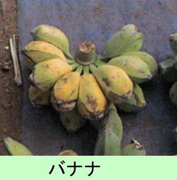

|
第６８ バナナを一本食べたら死んでもいい
 そこで、私も 『俺だって、天丼の一杯でも食べさせてくれたら、敵陣に斬込んで死んでもいい』と、本気で彼に返答しました。そして２ 人とも顔を見合わせて笑った。しかし、ここでは天丼なんてとんでもない話で、ニユーギニアにはバナナは沢山ある筈なの に、バナナでさえも夢のまた夢でありました。彼等に十分に食べさせてあげられない。僅かのサゴヤシ澱粉を与えてやるの が精一杯でした。所長と言っても、こちらだって辛い立場です。笑いながら『バナナを１本食べさせてくれたら、死んでもいい』と、私に話し掛けて来た春日上等兵も段々衰弱して行き、 病気でもないのに、食料不足のため、栄養失調で死んでしまった。『春日上等兵が私に向かってバナナを一本食べたら死ん でもいいと言った言葉』は今でも私の心の中に生き続けています。東部ニユーギニア戦線で戦っていた兵士の殆どの兵士は 彼と同じ心境で、死んでいった。春日上等兵のご冥福をお祈りします。 |